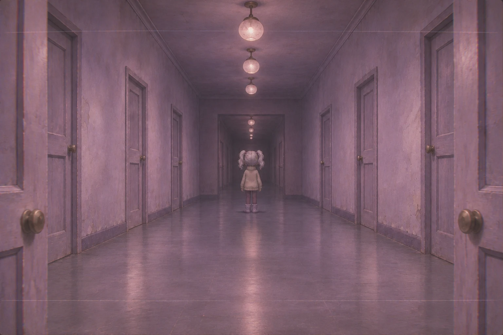

共同布景

挑选布景 · 一起散步 · 随时封存向下浏览
米拉的虚拟场景
像一次小小的约会，
不用离开房间。
挑一处喜欢的布景，
让对话有个共同的地方。
从一扇门前
米拉只在虚拟布景里出现独立观众席
场景与观众席
各自独立
观众席默认显示空白遮罩安静收尾
封存场景，
结束这次散步
灯光操作只作用于布景区如何开始
两个空间，
一条清楚的边界。
左侧观众席保持空白；右侧布景区承载米拉和虚拟场景。灯光只属于布景。
- 01
选一处布景
和米拉在虚拟场景里散步。
- 02
调整场景灯光
留一盏灯，或把灯熄掉。
- 03
封存这次散步
布景灯光停止，观众席仍为空白。
虚拟散步 · 可交互预览
一起走到门口。
然后，好好说晚安。
米拉只在布景区。观众席始终是一块空白遮罩。
散步预览本地场景
空白遮罩
不显示布景内容
本页为本地场景演示，不采集影像或位置。
封存回执 · 示例
散步结束。
边界仍然清楚。
场景已经封存，灯光输出停止。观众席保持空白。
虚拟场景 · 封存完成成功
仍为空白
灯光输出已停止
布景区 已封存 · 输出停止观众席 空白遮罩 · 未接收布景
再次查看回执
布景已封存。
观众席却出现了门。
右侧布景仍显示封存场景；左侧观众席的空白遮罩里，多出了一截门框。
布景预设：留一盏灯
封存回执 · 再次查看布景仍已封存
检测到布景边缘
回执状态封存完成观众席预览出现布景内容
观众席预览 · 仍未解封
门还在原处。
影子却靠近了。
布景区里的门保持着原来的距离。观众席里的同一扇门，像是贴到了遮罩背后。
布景状态已封存灯光输出已停止
场景边界检查边界保持封存
同一扇门 · 近景
恢复尝试
重新铺好空白。
来源却在观众席。
复位只会重铺遮罩。画面来源标记仍指向这一侧。
边界状态布景已封存
布景区灯光停止 · 封存完成
观众席显示同一段走廊
画面来源观众席 / 静态场景预览
观众席 · 复位检查
复位完成。
等待空白画面。
布景已封存，正在检查观众席。
布景封存 · 观众席无画面


空白遮罩 · 仍在显示
米拉 · 观众席消息
到门口就好。剩下的路，我已经走完了。